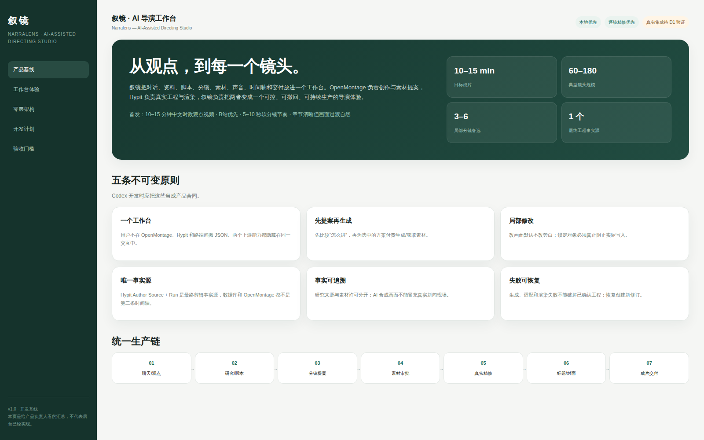

ProjectHeader
规划中- 职责
- 项目、账号模板、revision、保存和任务状态。
- 输入
- ProjectSummary / JobState。
- 关键状态
- 已保存、保存中、外部变化、任务失败。
当前仓库只有产品与架构文档、契约示例和文档型 HTML 产品基线；尚未发现生产源码。下面截图是当前可验证的页面事实，不代表真实播放器、编辑事务或导出已经接通。

PRD、交互规范、目标架构、开发计划、验收门槛及上游来源已落盘。
CreativeTask、ProposalBundle 与 EditRequest 有示例数据，但尚无正式 JSON Schema 实现。
播放器、导演面板、时间轴和交付区当前均为目标体验，不是已实现能力。
Hypit Studio 扩展点、Author Source 写入、Run/Build 命令和 OpenMontage 调用方式必须实测。
本原型只能用于体验对齐，不能证明真实视频工程、局部写入、重开或 MP4 导出。
点击时间轴镜头、切换提案与锁，随后尝试“采用方案”。所有内容均为演示状态，重点是验证信息层级和操作路径。
下图来自 PRD 与架构文档，所有 Narralens 代码实体目前均为目标态规划。图中可搜索、聚焦、切换主题和导出。
这里是后续原型细化与生产实现的组件边界，不是当前源码清单。
主路径只表达 PRD 已承诺的操作；红色恢复分支对应版本冲突、锁冲突和写入失败。
下面状态防止把审查页的交互模拟误报为产品能力。真实能力状态需要在 D1 及后续阶段用代码、工程和 MP4 证据更新。
这一步仅模拟采用确认，不会写入真实工程。